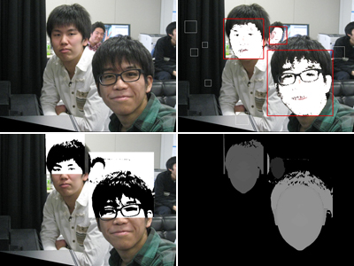

リサーチ
２D画像を３D化するためのデプスマップ作成法に関する研究
映画、テレビ、録画機器の３D化が進み、立体映像を視聴する機会が増えてきています。その中で、２Dコンテンツを３Dで鑑賞したいといった要求や、３Dコンテンツの制作現場における３D撮影の難しさが指摘されています。それらの解決策の一つとして、２D/３D変換技術に対する重要性が高まっています。当研究室では、２D写真を家庭で手軽に３D鑑賞するといった場面を想定し、まず、２D写真内の人物顔部分のデプスマップを自動作成する手法について検討しています。図は元写真（左上）、顔検出（右上）、髪の毛検出（左下）、デプスマップの作成（右下）です。
